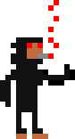

SQUATCH
SQUATCH
◐ Auto
Light
Dark
Story
World
Act
Ask
Plot
Characters
Imagine
Settings
🎙
➤
‹
1 of 4
Next
I already have the logline
write
‹ Back to writing
PAGES
Save PDF
Settings
close
settings
key
coin
model
test

ACTION
CHAT
What do you want?
➤
✕
SQUATCH
one key · one door
Keep
open a project
Open…
New